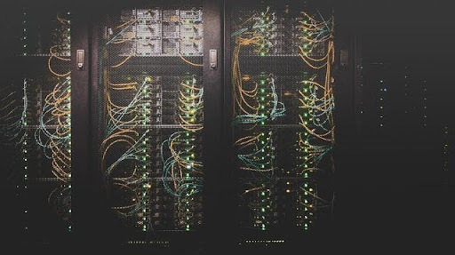

The concept of data communication – transmitting data through an electromagnetic medium such as radio or an electric wire – pre-dates the introduction of the first computers. Semaphore lines, telegraph systems and telex machines can be considered early precursors of this kind of communication. Information theory, as enunciated by Claude Shannon, in the 1940s, provided a firm theoretical underpinning to understand the trade-offs between signal-to-noise ratio, bandwidth, and error-free transmission in the presence of noise. The precursor to the Internet was jump started in the early days of computing history. In 1969, ARPA-funded researchers developed many of the protocols used today.

The internet was the work of dozens of pioneering scientists, programmers and engineers who each developed new features and technologies that eventually merged to become the internet we know today.
In Oct 1957, the Soviet Union launched Sputnik1 Satellite and the first workable prototype of the Internet came in the late 1960s with the creation of ARPANET, or the Advanced Research Projects Agency Network. Originally funded by the Department of Defense, United States of America. The very first Computer was large in size and not intended for Communication.
he online world then took on a more recognizable form in 1990, when computer scientist Tim Berners-Lee invented the World Wide Web. While it's often confused with the internet itself, the web is actually just the most common means of accessing data online in the form of websites and hyperlinks.
In June 1992, Congress passeda bill to make Internet public and from there internet commercially available to public. Before that internet was only used by the defense department.
In 1993, Mosaic web browser was created by two students from University of Illinois. Mosaic was the first web that popularized the World Wide Web and the Internet.
In 21st Century, Internet is everything.There are 11 million Domain names and 70 million websites over internet and it's still counting.
In 1993, Mosaic web browser was created by two students (Marc Andreessen and Eric Bina) from University of Illinois. Mosaic was the first web that popularized the World Wide Web and the Internet.
In 1994, James Clark met inventors of Mosaic web browser, the first widely distributed and easy-to-use software for browsing the World Wide Web and invested $4 million for them to create a new web browser under the company named "Netscape".
Still, the first practical schematics for the internet would not arrive until the early 1960s, when MIT's J.C.R. Licklider popularized the idea of an "Intergalactic Network" of computers. Shortly thereafter, computer scientists developed the concept of "packet switching," a method for effectively transmitting electronic data that would later become one of the major building blocks of the internet.
In 1962, there was an idea that shows network communication be built but it almost took 7 years to implement it. In 1969, they implemented the network concept and the same year first human landing on moon happened.
In 1995, Navigator was at peak and it made giant Microsoft to look for development of the web browser to destroy the Navigator from Netscape. Microsoft employees held meeting at Netscape. According to them, Microsoft came to them with an ultimatum. Join up or move out of the way. Microsoft offered Netscape a huge sum for their browsers code base. When the team refused, employees from Microsoft threatened to eliminate them from the market by any means necessary.
Gates sent out a memo to all Microsoft employees titled "The Internet Tidal Wave." In it, Gates outlined a new future for his company, one connected to the Internet. His paranoia for competition was also clear.
As Netscape's success grew, Microsoft got their own browser ready. It was called Internet Explorer. IE was, at first, far from impressive. It was released as an at-retail extension for Windows '95, and initially, did very little to damage Netscape's market share.
In 1969, Larry Roberts started working on the "Interface Message Processor (IMP)" which was a packet switching node used to interconnect networks. BBN team lead by Frank Heart began working on connecting 4 IMPs. There was an issue as the packets were not stopping after delivering message to node. (The first computer was located in a research lab at UCLA and the second was at Stanford; each one was the size of a small house). In 1971, there were 18 main frame computers connected to network.
The ARPANET was the first wide area packet-switching network with distributed control, similar to Donald Davies' 1965 design. In 1968, ARPA issued a request for quotation (RFQ) to build the system, which was awarded to Bolt, Beranek and Newman (BBN). Significant aspects of the networks's operation including routing, flow control, software design and network control were developed by BBN IMP team, which included Bob Kahn. The Purdy Polynomial hash algorithm was developed for the ARPRANET to protect passwords in 1971 at the request of Roberts.
In 1970s, Roberts joined the effort to standardize a protocol for packet switching based on virtual circuits, which led to the creation of Telenet, the first FCC-licensed public data network in the United States. He promoted this approach over the datagram approach in TCP/IP being pursued by ARPA, which he described as "oversold" in 1978. The X.25 protocol was adopted by PTTs across North America and Europe for public data networks in the mid-late 1970s. Roberts served as its CEO from 1973 to 1980.
In 1967, Frank Westervelt was recruited by Robert Taylor in the ARPA Information Processing Techniques Office to become the program manager for the ARPANET. He prepared a proposal that all host computers would connect to one another directly. Taylor and Wesley Clark disagreed with this design and suggested the use of dedicated computers to create a message switching network. These were later called Interface Message Processors.
At the Symposium on Operating System Principles that year, Roberts presented a plan based on William Clark's proposal for message switching. He met Roger Scantlebury, who had been working on packet switching at the time, and who suggested it for use in the WLAN.
 True Story
True Story
 W3C Validator
W3C Validator